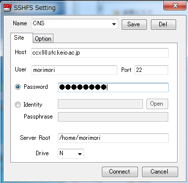
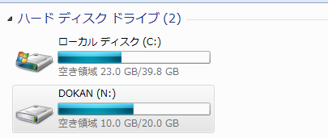
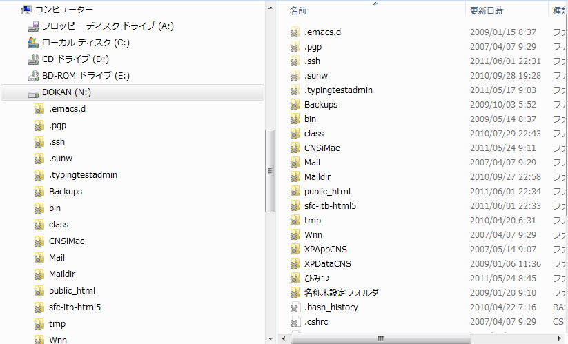
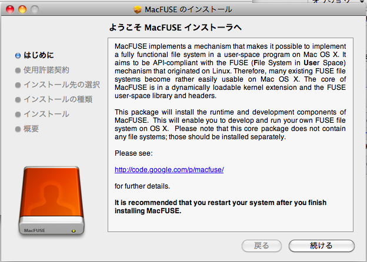
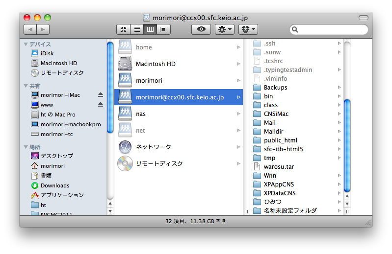

SSHFS : Uploading Files To Your CNS Home Directory Using Your Own PC
In this section, we would go over how to use SSHFS, which enables you to access your CNS home directory with your own PC. By using this function, you would be able to update your web site from anywhere with internet access.
Precautions For Using SSHFS
SSHFS enables you to access the data in your CNS home directory as if it is an external HDD attached to your PC. However, don't forget that the connection is "virtual". For example, if the internet connection is lost while editing a file on the SSHFS, or if your PC sleeps and resumes while the connection is active, the changes to your files may be lost, and at the worst case, some of the files may get corrupted. SSHFS may be useful, but it very important to save your work constantly.
Windows
If you are a Windows user, there are two ways to access your CNS home directory. One way is to transfer files with WinSCP, and another is to mount your directory with Dokan SSHFS.
Transfering Files With WinSCP
The detailed instructions of transferring files with WinSCP is indicated in the ITC Web Site (Japanese only).
WinSCP is an application which enables file transfers over the network using the SCP protocol. It is an useful application for transferring normal files, but considering the editing of HTML files, it may not be the case. Upon editing HTML files, or other files which may require constant updates, you must follow the following directions.
- Edit the HTML file with a text editor in your local PC.
- Save the file to a local destination within your PC.
- Start WinSCP, and upload the files to their corresponding location.
- Check the page with your browser. Return to step 1 when you encounter problems.
When editing HTML files, you may have to repeat this process many times. If so, there is a chance you may forget to upload the files after you have saved them locally. If this happens, the files would not be updated, and may cause worthless problems. Therefore, in this class, we recommend you use, Dokan SSHFS instead.
Mounting Your Directory With Dokan SSHFS
Dokan SSHFS is a software which enables you to access your CNS home directory as if it is a external HDD attatched to your PC. By using Dokan SSHFS, you would be able to directly edit your files within your CNS home directory, and won't have to save and upload files manually.
In order to install Dokan SSHFS, go to the Dokan Download Page, and download the Dokan Library and the Dokan SSHFS
Make sure you install the Dokan Library first. Double-click on the file you have downloaded, and follow the instructions on the screen to install.

Next, install the Dokan SSHFS. Since the most recent version of Dokan SSHFS does not include an installer, unpack the Dokan SSHFS package, and place it under a directory you prefer. Double-click on the Dokan SSHFS icon, and enter the connection settings as shown below.
Settings
- Host: ccx00.sfc.keio.ac.jp
- User: Your CNS Account Name
- Password: Your CNS Login Password
- Server Root: /home/[Your CNS Account Name]
- Drive: N (or any other unused drive letter)
When you have finished entering the settings, click on the "Connect" button. If successful, a window shown below would appear.

You should be able to see a drive named "DOKAN" in your Explorer.
When you open the drive, you would see the same files and folders you would see on the Macs in the computer room. These files and folders would be available for editing.
Mac OS X
If you are a Mac OS X user, you have the options of either using Cyberduck or SSHFS for accesing your CNS home directory.
Transfering Files With Cyberduck
Cyberduck is a software equivalent to WinSCP discussed above. The detailed instructions of transferring files with Cyberduck is indicated in the ITC Web Site (Japanese only).
Cyberduck encounters the same issues upon editing HTML files, so we recommend you use SSHFS for the Mac as well.
Mounting Your Directory With SSHFS
In order to mount your home directory with Mac OS X, you need to download and install MacFUSE and sshfs-gui. MacFUSE is the application which enables the mounting of your CNS home directory, and sshfs-gui makes the configuration process more simple.
First, download and install MacFUSE. The version of MacFUSE provided in the web site above may have problems upon starting up. Therefore, we recommend you download the Stable Version (2.1.9) from here. Download, unpack, and double-click on the MacFUSE Core.pkg icon to install.
Next, install sshfs-gui. Download the most recent version of sshfs-gui from the download page and install (drag and drop) it to your "Applications" folder.
When the installation is complete, double-click on the SSHFS GUI icon, and enter the settings as shown below.

Settings
- Host: ccx00.sfc.keio.ac.jp
- User: Your CNS Account Name
- Password: Your CNS Login Password
- Server Root: /home/[Your CNS Account Name]
When you have completed the settings, click on the "Mount" button. On the first time, a dialog message shown below would appear, so click on the "Accept Key" button.

If successful, you would be able to access your CNS home directory from the Finder.
For easier access to your home directory, drag and drop the icon of your mounted drive under the "Devices" section on your finder. If you ever lose the window with your home directory, first select "Open Folder" from the "Move" menu, then enter the following path in the text box.
Path: /Volumes/[CNS Account Name]@ccx00.sfc.keio.ac.jp